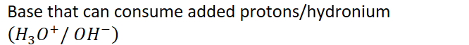
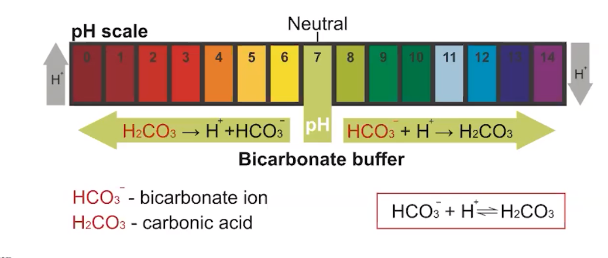

Buffer: a solution that is resistant to a change in pH upon addition of a strong acid or base
Needs two substances:
{width="6.822916666666667in" height="0.3541666666666667in"}
{width="6.9375in" height="0.6770833333333334in"}
Acid and base must not react with each other
Usually prepared from a conjugate acid-base pair
{width="6.520833333333333in" height="2.7708333333333335in"}